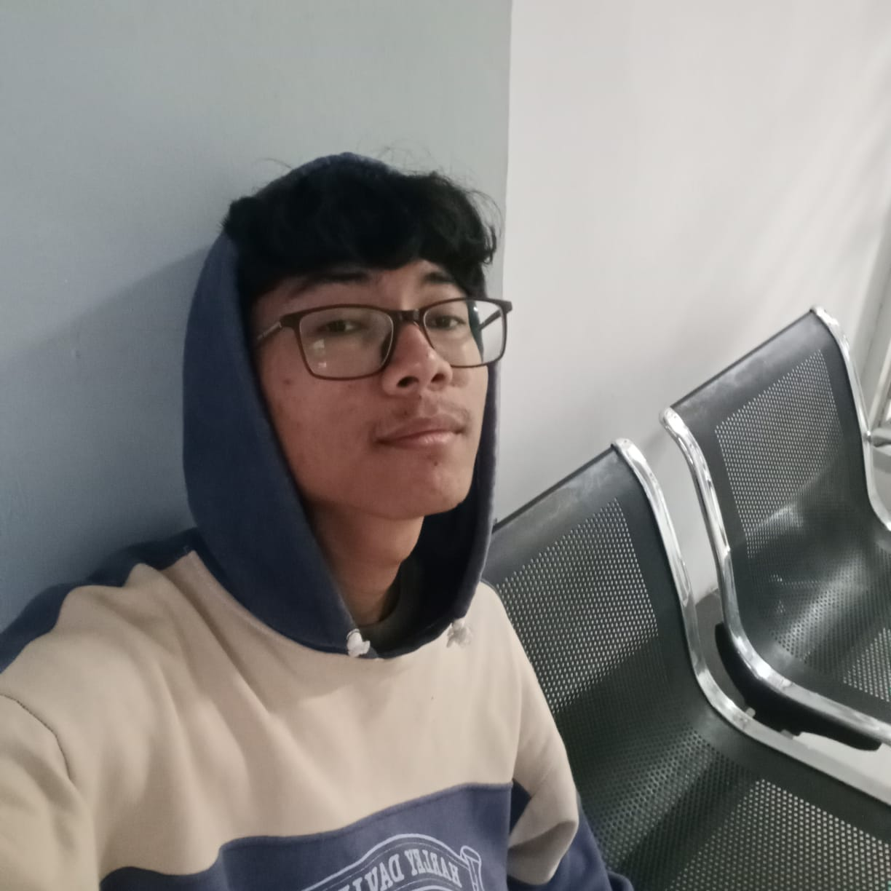

Salam kenal!! Nama Saya Doni Setiawan

Saya membangun antarmuka digital yang mendobrak batas kewajaran. Tidak ada template biasa, hanya pengalaman visual yang mendalam, performa tinggi, dan desain yang Paling Best.
Saya seorang pengembang web dan desainer eksperimental yang bosan dengan web yang terlihat sama semua.
Saya percaya bahwa setiap baris kode adalah seni dan browser adalah kanvas kosong. Fokus saya adalah menciptakan interaksi halus, animasi kompleks, dan arsitektur frontend modern yang tidak hanya fungsional, tetapi memberikan efek "WOW".
Aplikasi pencatatan keuangan pribadi berbasis mobile. Memiliki fitur pelacakan pengeluaran, pemasukan, dan grafik laporan bulanan.
Lihat Detail →Aplikasi web untuk pemesanan antrean pangkas rambut. Pelanggan dapat memilih kapster, jam layanan, dan melihat antrean secara real-time.
Lihat Detail →Aplikasi Point of Sales terintegrasi dengan manajemen inventori barang. Mendukung fitur cetak struk dan laporan penjualan harian.
Lihat Detail →Sedang mencari developer untuk proyek anti-mainstream Anda? Atau sekadar ingin menyapa? Kotak masuk saya selalu terbuka.
d.setiawan2255@gmail.com© 2026 Doni Setiawan.